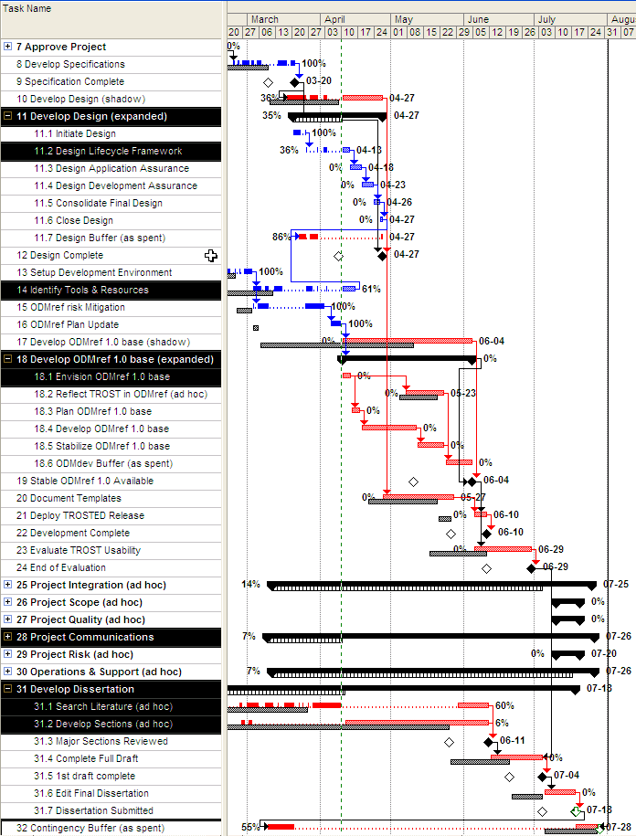

Project
P050402 ODMref 1.0
Tracking
2005-04-10 Progress Report
P050402d>
2013-08-22
-12:47 -0700
|
|
Project
P050402 ODMref 1.0 |
|
1. Current Status
1.1 Tracking Against Project Plan
1.2 Milestone Status
2. Accomplishments
3. Concerns
The project for initial ODMref 1.0 development is embedded in the TROST Pilot project. This ODMref 1.0 project tracking covers only those TROST Pilot activities having some bearing on ODMref 1.0 development.
Table 1. ODMref 1.0
Development-related Tasks: Tracking through 2005-04-09 [plan version 6.3]
[identified tasks are from the the Work Breakdown
Structure produced in the ODMref Plan Update task]

Table 2: Milestone Status as of 2005-04-09 Tracking and Outlook [plan 6.3] Milestone Date Description
Actual Last Planned Baseline 2005-02-01 2005-02-07 [4.0] 2005-01-10 [3.0] Stage 2: Proposal Approved 2005-03-02 2005-02-23 [4.0] 2005-01-07 [3.0] Development Environment Set Up 2005-04-02 2005-03-23 [6.0] 2005-03-02 [4.0] Risk Mitigation Experiment Completed 2005-03-20 2005-03-11 [5.2] 2005-03-09 [4.0] Stage 3: Specification Complete 2005-04-27 [6.3] 2005-04-08 [4.0] Stage 4: Design Complete 2005-06-04 [6.3] 2005-05-10 [4.0] Base ODMref Software Complete 2005-06-10 [6.3] 2005-05-26 [4.0] Development Complete 2005-06-11 [6.3] 2005-05-25 [4.0] Major Dissertation Sections Reviewed 2005-06-29 [6.3] 2005-06-10 [4.0] Evaluation Completed 2005-07-18 [6.3] 2005-07-04 [4.0] Dissertation Submitted 10-day slack 2005-07-28 [6.3] 2005-07-28 [4.0] Contingency Buffer & Time Limit For the part of ODMref 1.0 being carried out under the TROST Pilot and M.Sc in IT project dissertation, the project dissertation deadline prevails. That is, definition of ODMref 1.0 content must be adjusted as necessary to allow the dissertation deadline to be achieved. A current risk is having sufficient ODMref 1.0 available for meaningful assessment, public exercise, and TROST evaluation. This will be addressed in the first stage under "Develop ODMref 1.0 base (expanded)."
Completed Stage 3: Specification
Continued Identification of Tools, including free tools for development of ODMref 1.0 on Microsoft Windows.
Completed the ODMref risk-mitigation exercise to confirm that ODMref 1.0 can be developed on schedule. There is enough confidence to continue despite mixed results.
Performed the scheduled ODMref Plan Update. The result is a re-plan that expands the ODMref 1.0 development into small components using rolling-wave deepening and providing a 12-day schedule buffer (Table 1).
Conducted a start-of-design exception review to apply rolling-wave expansion to the TROST Pilot design stage.
Completed the initial design subtask and have removed the TROST Pilot design from the critical path (for a short time).
I am sustaining a high level of effort but the parallel tasks in the plan have only sequential resource available: multi-tasking myself is still a problem, along with my use of top-down, schedule-driven planning. I must still trust in the rolling-wave approach as providing enough early-warning signs.
I did not allow for the amounts of documentation and communication that the project tasks require apart from the dissertation itself. The need for this is now identified. Knowing what is critical and what else can be deferred is still a challenge.
The TROST Pilot design stage is off schedule. The risk mitigation exercise has led to the design outlook exceeding the original 4-week allowance by 10 days. I have consumed all but one-day's buffer and must find ways to abbreviate the remaining design effort. My intention is to shed schedule and bring the content to a level that allows submission of the design by Friday, April 22.

|
You are
navigating the ODMA Interoperability Exchange. |
created 2005-04-09-10:53 -0700 (pdt) by
orcmid |